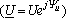
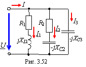

Найдем ток I через внешние зажимы цепи (рис. 3.52), подключенной к источнику синусоидального напряжения  и представляющей собой параллельное соединение трех ветвей: R1L1, R2C2 и С3. Рассмотрим два варианта решения. 
1-й вариант. Предварительно определив комплексную проводимость цепи Y, по заданному напряжению U находим ток: I = YU,
где Y = Y1 + Y2 + Y3; Y1 = 1/Z1; Y2 = 1/Z2; Y3 = 1/Z3;
;
; .
2-й вариант. По заданному комплексу напряжения и комплексам сопротивлений ветвей цепи находим комплексные токи ветвей:
I1 = U/Z1; I2 = U/Z2; I3 = U/Z3.
Затем, воспользовавшись 1ЗК, запишем комплекс тока на входе цепи I = I1 + I2 + I3, равный сумме комплексов токов ветвей (или геометрической сумме векторов токов ветвей при построении векторной диаграммы в комплексной плоскости).
|